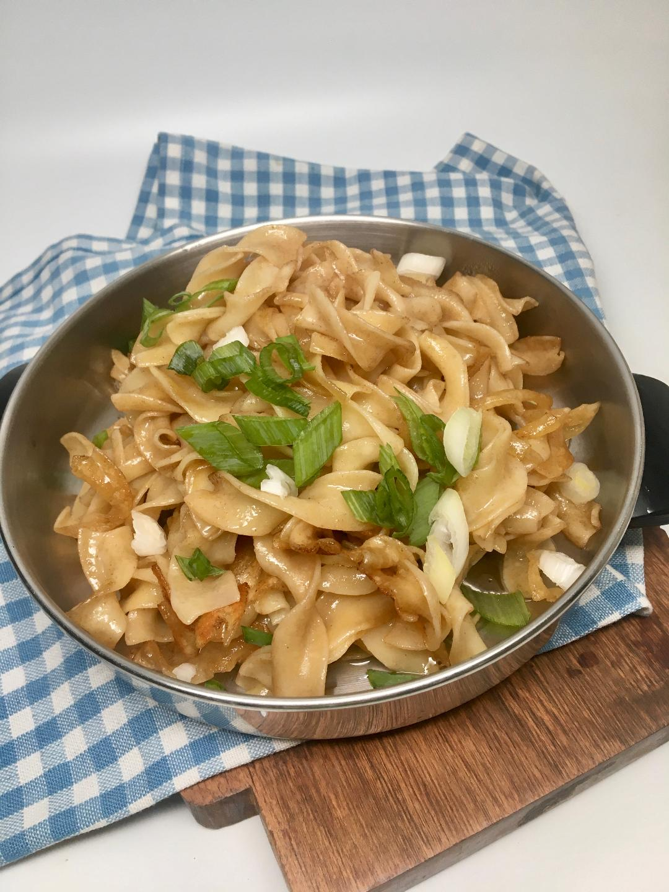

Garlic Noodles

Description
A tasty garlic noodles for you to enjoy. This food doesn't take that much time to make.
Ingredients
- 1 (8 ounce) package egg noodles
- ¼ cup soy sauce
- 3 tablespoons peanut oil
- 2 tablespoons sesame oil
- 2 tablespoons granulated garlic
- 1 tablespoon chopped green onion
Steps
- Fill a large pot with lightly salted water and bring to a rapid boil.
- Cook egg noodles at a boil until tender yet firm to the bite, 7 to 9 minutes. Drain.
- Add soy sauce, peanut oil, sesame oil, and garlic to the same pot.
- Return egg noodles to the pan and stir until well coated.
- Preheat a large nonstick skillet over medium heat.
- Transfer noodles and sauce into the hot pan and stir-fry until they are slightly crispy, 3 to 5 minutes.
- Garnish with green onion.